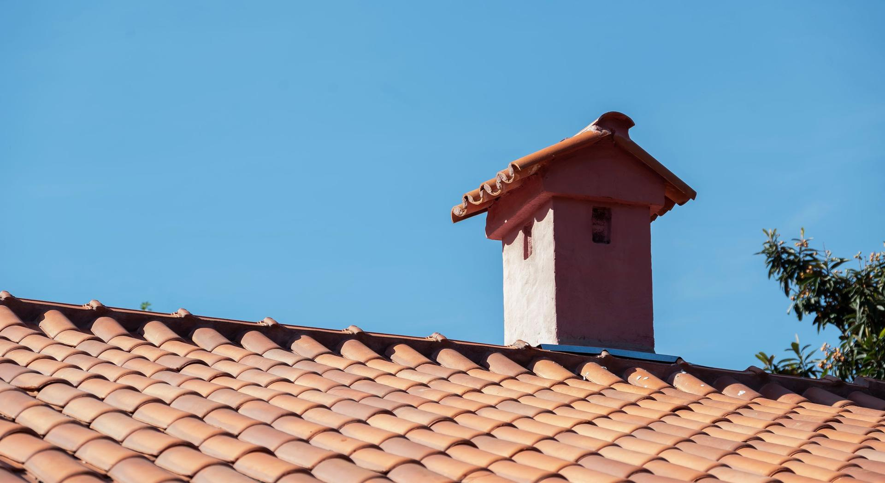
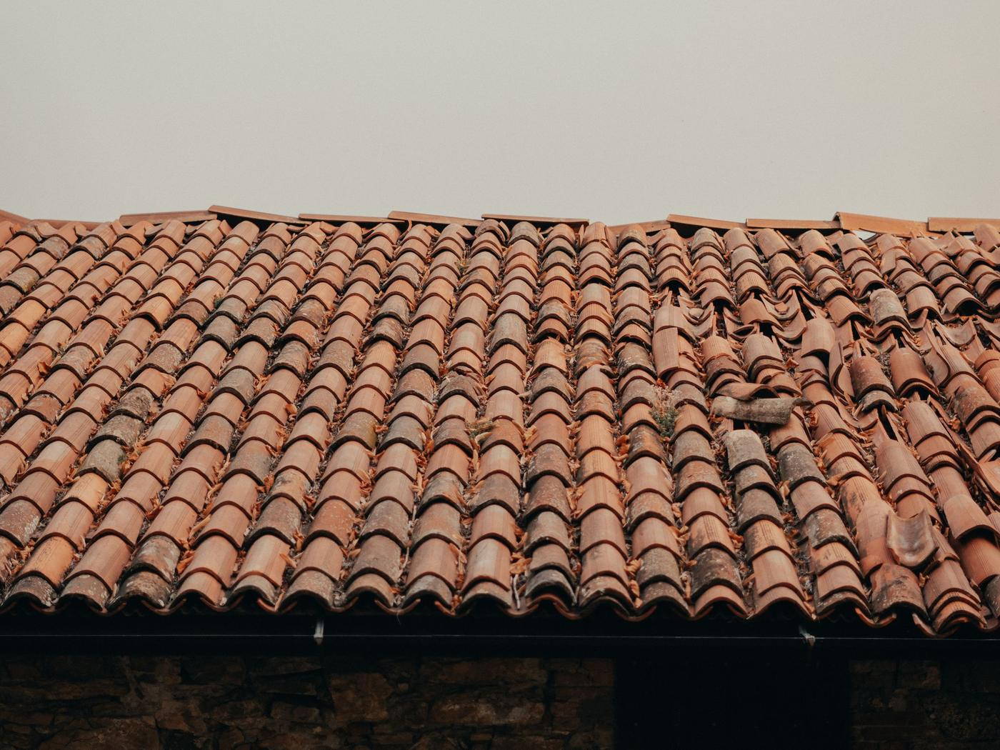
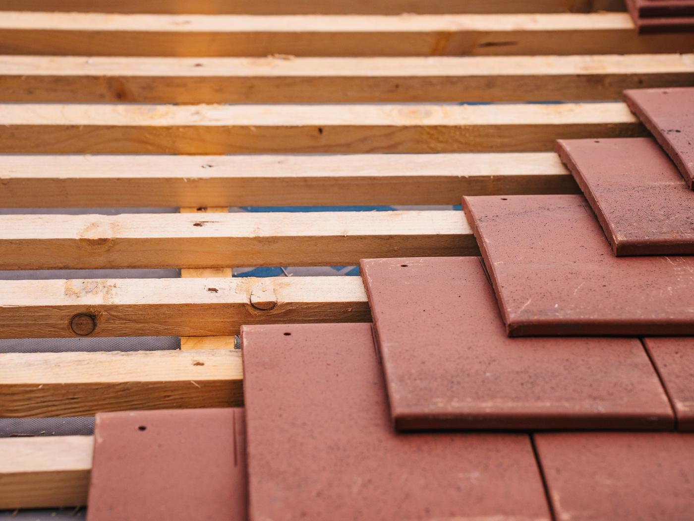
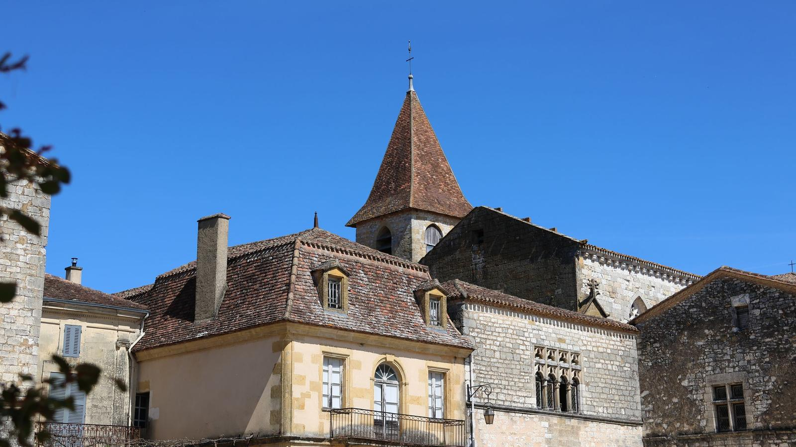

Auch · Mirande · Vic-Fezensac · tout le Gers
Couvreur à Auch, et il monte voir.
Vous avez l’artisan au téléphone, pas un standard. Il passe, il regarde, il vous dit ce qui doit être fait, et ce qui peut attendre.
Photo d’illustration : tuile canal, la couverture du Sud-Ouest.
Couvreur dans le Gers Couvreur à Auch
Dans le Gers, un toit encaisse quatre saisons franches.
Grêle au printemps, soleil qui cuit la tuile l’été, pluies d’automne, gel en janvier : une couverture gersoise travaille toute l’année. La faire regarder coûte moins cher que de la refaire.
- Un seul interlocuteur du premier appel à la fin du chantier
- Diagnostic sur le toit et devis gratuits
- Urgence sous 24 h après grêle ou coup de vent
- Tuile canal, mécanique, ardoise, zinc, bac acier : tout le toit
Parler à l’artisan
Quatre champs, une minute. Warren vous rappelle lui-même pour caler le diagnostic, gratuit.
Un toit ne lâche pas d’un coup. Il prévient.
Presque toutes les grosses réfections commencent par trois tuiles que personne n’a fait remettre en place. Un diagnostic ne coûte rien ; une couverture neuve coûte le prix d’une voiture.

La tuile canal glisse
Posée au mortier ou simplement tenue par son poids, la tuile de couvert finit par descendre. Le jour où elle découvre la tuile de courant, l’eau passe.
L’eau prend son temps
Une infiltration entre par un point et ressort trois mètres plus loin, après avoir suivi un chevron. Quand la tache apparaît au plafond, l’eau circule depuis des semaines.
La grêle laisse des fêlures
Un orage de grêle ne casse pas toujours la tuile : il la fêle. La fuite arrive à la pluie suivante, quand plus personne ne fait le lien.
Le support travaille
Sous la tuile, il y a du bois. Un support humide en permanence se ramollit, et la réparation devient une réfection.
Regarder, dire, chiffrer.
Un devis de toiture honnête commence par une montée sur le toit. Tout ce qui se décide depuis le sol est une estimation, et on la paie deux fois.
- 01
Vous appelez
Vous décrivez ce que vous voyez. Si c’est urgent, le passage se cale sous 24 h.
- 02
Diagnostic sur place
Tuiles, faîtage, rives, noues, solins, gouttières : tout est regardé, photos à l’appui. C’est gratuit.
- 03
Un devis écrit
Détaillé poste par poste, avec ce qui est urgent et ce qui peut attendre. Pas de travaux superflus.
- 04
Le chantier
C’est lui qui le fait. Vous savez qui monte, quand, et ce qui est repris.
Compris à chaque intervention
- Diagnostic du toit et devis, gratuits
- Photos avant et après intervention
- Tuiles remplacées ou remises en place
- Faîtage, rives et solins vérifiés
- Gouttières dégagées au passage
- Chantier nettoyé, déchets évacués
Ses chantiers, pas une banque d’images.
Mirande, Auch, et ailleurs dans le Gers : les photos que Warren prend lui-même sur ses chantiers, maisons comme commerces.


Un toit qui tient, ça se voit d’en bas.
Une couverture saine se reconnaît à ses lignes : des rangs droits, un faîtage net, pas de tuile décalée. Quand la ligne se casse, c’est qu’il est temps de monter.


Photos d’illustration du métier. Ses vrais chantiers sont plus haut, et vos propres photos avant et après vous sont remises.
Combien coûtent des travaux de toiture ?
Un toit se chiffre après l’avoir vu. La surface, la pente, l’accès et l’état du support font varier le prix du simple au triple : un chiffre au téléphone serait de la devinette.
Tuiles remises en place ou remplacées, faîtage repris, gouttière dégagée.
Réfection de couverture, zinguerie, reprise du support, évacuation comprise.
Le chiffrage est gratuit, remis après diagnostic, détaillé poste par poste. Rien ne s’ajoute en cours de chantier sans votre accord.

Dans le Gers, les toits sont en tuile depuis toujours.
Un appel, un diagnostic, une réponse franche. Si votre toit peut attendre, il vous le dira aussi.
Ce que disent ses clients.
Le Gers ne se couvre pas comme ailleurs.
Tuile canal sur les fermes, tuile mécanique sur les pavillons, toits-terrasses dans les zones d’activité : un couvreur gersois change de métier d’une commune à l’autre.
Auch et le centre
Maisons de ville et pavillons, beaucoup de tuile mécanique et de toits-terrasses commerciaux. En secteur protégé, la tuile se choisit avec la mairie.
L’Astarac : Mirande, Masseube, Seissan
Fermes et maisons anciennes en tuile canal, souvent sur de grandes surfaces. La tuile de couvert glisse, le faîtage se descelle.
La Lomagne : Fleurance, Lectoure
Pentes faibles et tuile canal d’origine : la mousse s’installe sur les pans nord, et l’hydrofuge prend tout son sens.
L’est : L’Isle-Jourdain, Gimont, Samatan
Pavillonnaire récent tourné vers Toulouse, tuiles mécaniques et premiers démoussages, à faire avant que la tuile ne boive.
Ce qu’il fait, et ce qu’il ne fait pas
Recherche de fuite et réparation, tuiles remplacées ou remises en place, faîtage, rives et solins, zinguerie, nettoyage et démoussage, hydrofuge et peinture de toiture, toits-terrasses, puits de jour et réfection complète. Il monte sur le toit avant de chiffrer, toujours.
Ce qu’il ne fait pas : vendre une réfection quand une réparation suffit, ou un hydrofuge sur une tuile qui est à remplacer. Pas de survente : un diagnostic réel, et des travaux ciblés.
Tout le Gers, depuis Mouchès.
L’atelier est à Mouchès, entre Auch et Mirande : le centre du département est à moins d’une demi-heure. La Haute-Garonne et les Pyrénées-Atlantiques se font aussi, sur demande.
- Auch
- Mirande
- Vic-Fezensac
- Masseube
- Marciac
- Seissan
- Fleurance
- L’Isle-Jourdain
- Condom
- Gimont
- Lectoure
- Eauze
- Marciac
- Samatan
- Lombez
- Nogaro
- Riscle
- Montesquiou
- Pavie
- Barran
- Castelnau-Barbarens
- Saint-Jean-le-Comtal
- Montréal
- Plaisance
- Mauvezin
Votre commune n’est pas dans la liste ? Un appel suffit pour savoir si le déplacement est possible.

Vous vous demandez…
Une question qui n’est pas là ? Vous aurez l’artisan au bout du fil, pas un commercial.
06 16 95 49 47Le diagnostic et le devis sont-ils vraiment gratuits ?
Sous combien de temps intervenez-vous ?
Quelles communes sont desservies ?
Quels types de toiture traitez-vous ?
Qui vient sur le chantier ?
Travaillez-vous pour les professionnels ?
Faut-il être présent pendant les travaux ?
Quelle TVA s’applique ?
Un appel suffit pour savoir où vous en êtes.
Décrivez ce que vous voyez : il vous dira si ça peut attendre, ce que ça implique, et ce que ça coûte.
- Un rappelDans la journée, par Warren lui-même.
- Un diagnosticSur le toit, gratuit, photos à l’appui.
- Un devis écritPoste par poste, sans travaux superflus.
- Vous décidezRien n’est engagé tant que rien n’est signé.
Atelier : Los Beasos, 32300 Mouchès
Demander mon devis
Quatre champs, un rappel dans la journée.